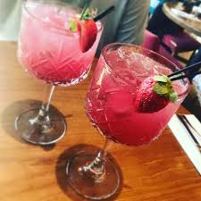

!DOCTYPE html>
My Recipe Book | Drinks | Milkshake

Strawberry Collin Cocktail
PRICE: R42.50
Prep Time : 5mins
Yield : 2
Ingredients
Steps
If you'd like strawberry 'ice cubes', freeze a few strawberries on a tray until frozen: it should take a few hours. Then transfer to a container until you are ready to use them. They'll keep for a number of months. (Plus, hey look pretty, don't dilute your drink and you can eat them after!)
Puree the strawberries in a small blender then mix in the sugar until it dissolves
Put 1tbsp of lemon juice each in the bottom of two glasses. Then add 1 ½oz of gin to each as well. Divide the strawberry puree between the two glasses (you can strain it if you'd like to try to remove some of the seeds) and stir the mixture.
Add the frozen strawberries to the glasses along with one or two ice cubes, if you'd like/if needed. Then top up the glasses with soda water.
Drizzle around ½tsp of pomegranate syrup/molasses over each glass and stir through before drinking.